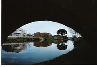

Moraleja (Cáceres)
 De: La Frikipedia, la enciclopedia extremadamente seria.
De: La Frikipedia, la enciclopedia extremadamente seria.
| De la serie ciudades del mundo:
|
| Moraleja
|
|
|
|
| (Bandera)
|
(Escudo de armas)
|
|
| Topónimo oficial
|
?
|
| País
|
España
|
| Código postal
|
10840
|
| Superficie
|
No se conoce
|
| Altitud
|
No se conoce
|
| Distancia
|
Larga
|
| Fundación
|
1590
|
| Población
|
Bastante
|
| Gentilicio
|
Moralejanos
|
| Alcalde
|
La Roka
|
| Pongan mas info, coño!
|
Para otros usos de este término/definición/cosa, véase Moraleja (desambiguación).
Moraleja, también llamada Drogaleja, es una localidad de Cáceres, Extremadura. Ciudad llena de gente muy característica del panorama español. Moraleja cuenta con una gran cultura artística, debido a los MH516 estampados de sus calles... y a sus bigSmokers.
Grupos étnicos
- Frikis: Grupo que se reúne en su íntimo lugar de la plazoleta pajarito 12 lugar "INTIMO" no por que este cerrao sino por que por no verles la cara de tonto por ahí no pasa ni dios. Son raros y tal, gustos mas raros, musica penosa, vestimenta macarra, feos, pero son wena gente
- La 516: Grupo de personas, muy conocido en Moraleja, que quieren conquistar los límites de la ciudad mediante pintadas y grafitis que campan a sus anchas por todo el panorama moralejano. Sus integrantes son un grupo de chavales. Son en su mayoría que adoran a Camaron, rey del flamenco. Quieren ser una Mafia, y lo están consiguiendo debido a su fuerza musculosa. Los hay de todas las edades, sexo, etc. Su principal prueba de entrada es tener clase.
- Mafia del humilladero (MH): Es una mafia muy extendida, debido a que su barrio, el humilladero, está clasificado como zona peligrosa. Este grupo de mafiosos es muy peligroso sus integrantes son adoradores natos de la rumba y el tuning, de pequeño se divertian haciendo cabañas (nunca nos han gustado los comics, hijos de puta, solo nos gustan las revistas xxx y de coxes no te jodes...). Sus integrantes son personas normales a simple vista, pero que te pegan una colleja por detrás si te descuidas o un navajazo o lo que haga falta en busca del respeto. Delincuencia y vandalismo callejero CLAN VEROTE 516 CREW
Monumentos
- La Fuente El Avispero: Es un gran trozo de mierda en el centro del pueblo que responde al nombre de fuente.
- C.P. Virgen de la Vega: Fundición de hierro, aunque también se crian la mayoria de los chavales que no van a influir en el futuro moralejano. Ahora es un instituto de alto status social en el que sus integrantes se pelean con los de la penitenciaria Cervantes para saber cuál es mejor.
 El puente de la Alameda, al fondo la casa de cultura y de la encomienda (casa de un puto fachuca aburguesado come escrotos rebozados en los pelos de la calva de Franco)
- Pub La Luna: Sitio de culto moralejano en el que tienes que ir si quieres saber de Moraleja. Es un pequeño local en el que les han cogido manía a los civiles y hacen todos los días redadas, no se sabe el porqué, dado que en La Luna todos viven en amor y fraternidad, y no es un lugar peligroso.
- C.P. Cervantes: Ahora es un colegio-penitenciaria que es el sitio donde se crían y surgen los integrantes de la Mafia del humilladero.
- El puente: vaya pedazo de puente que tenemos!! esta alcaldesa se ha lucido de esta se corona o la hacen ministra o algo en fin que estaba mal y lo han kedao peor xk no se puede pasar ni con un puto coxe!!
- El Puente de la alameda: Uno de los muchos lugares de reunión del famoso Grupo étnico de los yonkies al cual recurren para inyectarse las dosis de heroína conseguida mediante el dinero robado a los pobres transeúntes a punta de pajita, y que tanto les estimula.
Barrios
Lo mas característico de la ciudad es su división por barrios, a lo San Andreas:
- La Eras: Barrio peligroso ¡¡¡¡ Trespassers will be shot, survivors will be shot again!!!!
- Las Angustias: Está por estar...
- El Humilladero: Más peligroso aún que La Eras debido a su peligrosa Mafia....
- San Cristóbal: Más de lo mismo....
- Brons: Yonkies, retaleros y purrela del estilo que no tienen pa comer pero si pa mierda. Se dedican al trapixeo y esta situado cerca del pabellon.
Autor(es):
- Krusher
- Nexo
- TheOm3ga
- Poderosoman
- EL Dios
- Frikiman
- Aque
- Desconocia!!
- La rome
- KakaDeLuxe
Frikipedia 2005-2016, Licencia
GFDL 1.2 - Extraído por FrikiLeaks